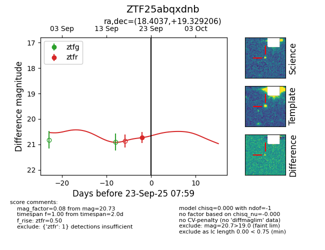
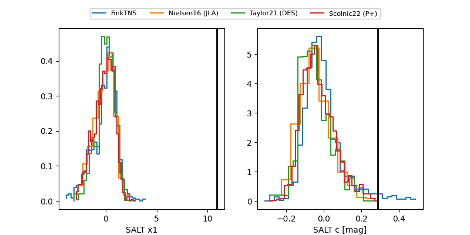

FINK: ZTF25abqxdnb
Lasair: ZTF25abqxdnb
ALeRCE: ZTF25abqxdnb
ZTF25abqxdnb (ztf,fink)
equatorial (ra, dec) = (18.4037,+19.32921)
galactic (l, b) = (130.1203,-43.23279)


last ztfr=20.73
1 ztfr detections